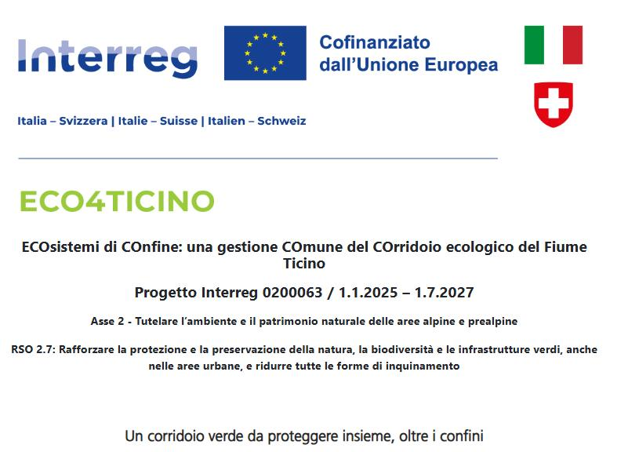
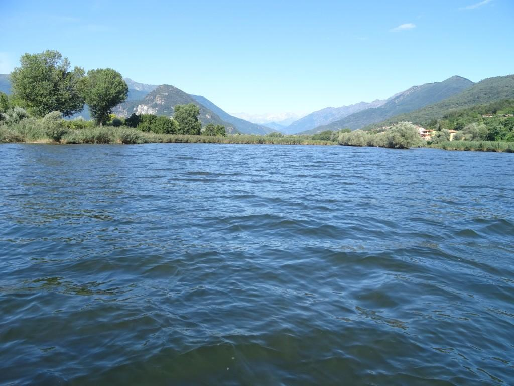
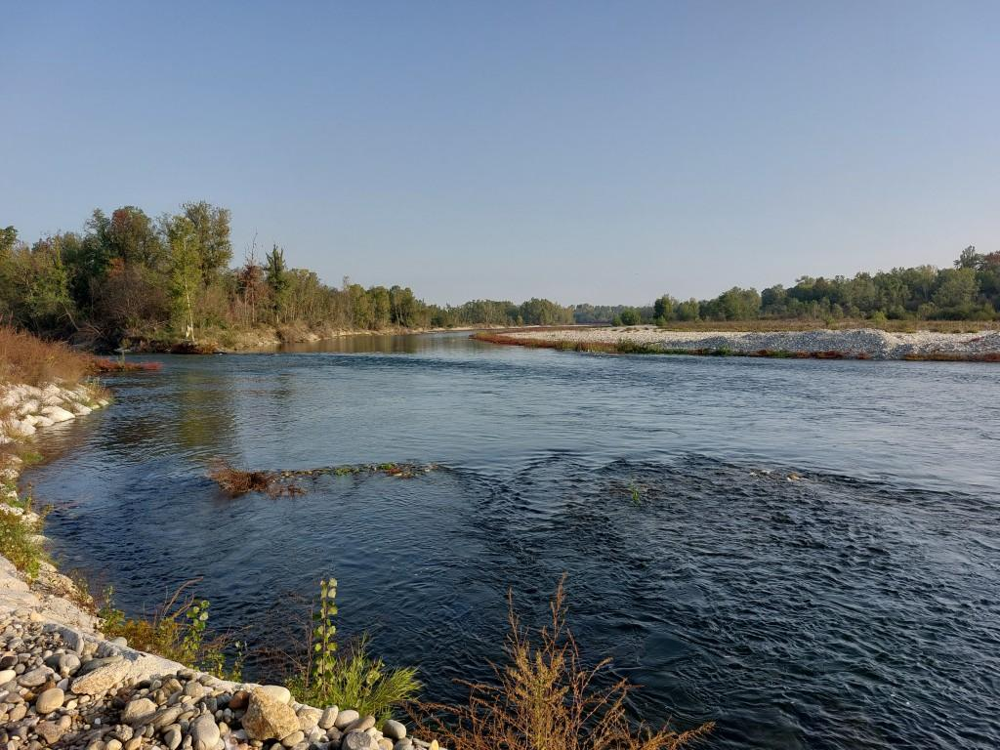

Attività · Programmi LIFE e ricerca europea
Eco4Ticino – Un’alleanza per difendere la biodiversità tra Italia e Svizzera
Eco4Ticino
Un’alleanza per difendere la biodiversità tra Italia e Svizzera
Un corridoio verde da proteggere insieme, oltre i confini
Il Fiume Ticino attraversa territori diversi ma interconnessi: dal Canton Ticino alla Lombardia e al Piemonte, definisce un corridoio ecologico di importanza strategica, punteggiato da zone umide, foreste ripariali, brughiere e prati aridi. Questo mosaico di habitat accoglie una biodiversità preziosa, che oggi è però sotto pressione.
L’agricoltura intensiva, l’espansione urbana e l’industrializzazione hanno frammentato il paesaggio e degradato molti ambienti naturali. Le specie autoctone si trovano a sopravvivere in spazi sempre più ridotti e isolati, mentre i confini amministrativi spesso ostacolano una gestione integrata ed efficace della biodiversità.
Vogliamo affrontare queste sfide in modo sistemico e condiviso: partner italiani e svizzeri uniscono le forze per promuovere una gestione transfrontaliera del patrimonio naturale del fiume.
ECO4TICINO si fonda sul Piano di riqualificazione del Corridoio Ecologico del Fiume Ticino 2021–2031, un documento strategico costruito da una rete di circa 30 enti italiani e svizzeri, tra cui Istituto Oikos. Questo piano traccia una visione di lungo periodo e individua le condizioni necessarie per riportare continuità ecologica, salute ambientale e resilienza lungo tutto il corso del fiume.
Insieme a una fitta rete di partner con competenze scientifiche, tecniche e operative, realizziamo interventi concreti e strumenti di governance efficaci per il recupero funzionale del Corridoio Ecologico del Ticino.
La nostra strategia si basa su tre aspetti chiave:
> rafforzamento della collaborazione tra enti territoriali e aree protette, migliorandone le competenze
> definizione e messa in pratica di strategie condivise di conservazione: interventi di riqualificazione e ripristino di habitat fragili
> coinvolgimento attivo della cittadinanza, per favorire un senso di identità comune tra le popolazioni che vivono lungo il fiume.
ECO4TICINO integra competenze specialistiche e partecipazione attiva dal basso per generare un cambiamento duraturo. L’obiettivo non è solo ambientale: è sociale, culturale e politico. Un futuro sostenibile per il Fiume Ticino può nascere solo da una visione comune e da un’azione collettiva che vada oltre i confini.
Foto: Graia Srl


